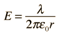
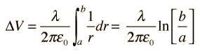

For a cylindrical geometry like a coaxial cable, the capacitance is usually stated as a capacitance per unit length. The charge resides on the outer surface of the inner conductor and the inner wall of the outer conductor. The capacitance expression is
The capacitance for cylindrical or spherical conductors can be obtained by evaluating the voltage difference between the conductors for a given charge on each. By applying Gauss' law to an infinite cylinder in a vacuum, the electric field outside a charged cylinder is found to be

The voltage between the cylinders can be found by integrating the electric field along a radial line:

From the definition of
capacitance and including the case where the volume is filled by a dielectric of dielectric constant k, the capacitance
per unit length is defined as